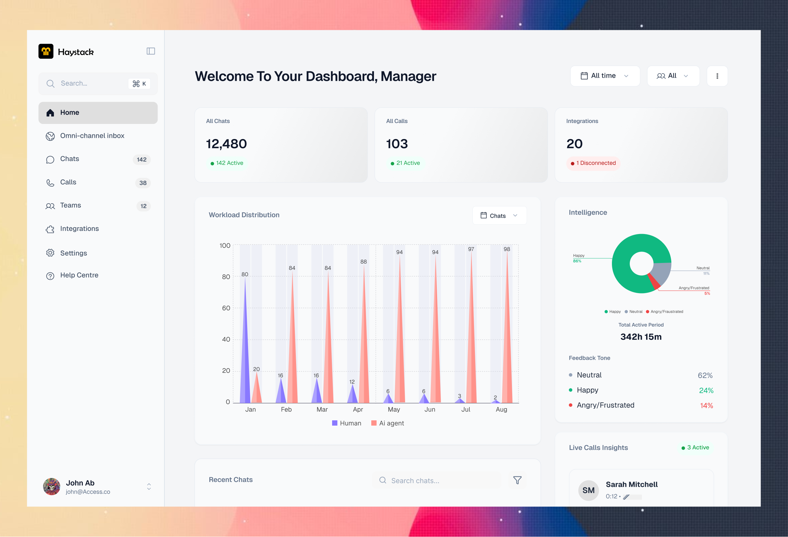

Haystack | AI-Powered Omni-Channel CRM & Support Automation
Overview
Haystack is an ai powered customer service management tool that helps large and medium scale businesses optimize customer service issues through chats and calls.

Design Process
For the design process, I followed 4 critical steps.
[Baseline Problem] → [Targeted Research] → [Refine Problem & Goals] → [Design & Test]
The Problem
As medium and large companies scale, their customer service quality heavily reduces, because high volumes of routine queries overwhelm human agents, leaving customers waiting days for simple resolutions, leading to increased customer complaints.
The Project Goal
The goal is very simple.
Automate Resolution: Design & Deploy an autonomous AI agent to handle routine complaints and eliminate massive ticket backlogs.
Research
To ensure our design decisions were grounded in real-world data rather than assumptions, we did a comprehensive research phase. Our focus was to gather actionable data directly from the people experiencing the problem daily.
The following section outlines our systematic approach: defining clear Research Objectives, detailing our data-gathering Methodology, and synthesizing our findings into the core Insights that drove the final design.
Research Objectives
Before designing, we needed to uncover why medium and large enterprises suffer from severe customer support backlogs and high agent burnout. We were driven by two primary goals:
- Determine the root causes of slow response times. We needed to map where data gets trapped internally and why agents struggle to get information to the customer quickly.
- Map Agent Bottlenecks: Uncover the workflow inefficiencies, missing data points, or repetitive tasks that cause the longest delays in an agent's day.
Research Insights
Our user interviews and observations revealed that the problem wasn't just a lack of human staff. Some companies attempted to use automated tools to solve their backlogs but the execution has just made customers more furious.
- Customers are highly frustrated by automated bots that provide generic FAQ links instead of specific answers.
- Blind Handoffs Escalate User Anger: One of the biggest friction point occurs during a human transfer. Customers get furious when forced to re-explain their entire issue from scratch. Conversely, human agents feel set up for failure when an escalated ticket drops into their queue completely blank, without any of the preceding chat history.
- Data Spread Across Software: Customer information is mostly spread across multiple software, increasing the time it takes to resolve one customer complaint.
User Personas
To ensure the platform addresses both the operational strains on agents and the frustrations of end-users, we synthesized our findings into two key personas:


Competitor's Analysis
To understand how existing customer service platforms handle automation and scaling friction, we analyzed the dominant archetypes in the support software market. Our focus was to identify why existing tools fail to solve high ticket backlogs without destroying user trust.

Our competitor analysis exposed a clear flaw in the current market. Incumbents like Zendesk and Salesforce provide heavy infrastructure and broad integration ecosystems, but their AI implementations feel bolted-on. They rely on rigid decision-tree bots that deflect tickets by tossing static help center links at users. When frustration inevitably peaks and a human must step in, the handoff is blind — no context or chat history transfers over.
Tools like Intercom do a better job with modern conversational UI, but they lack autonomous execution. They cannot execute deep operational actions on external databases (e.g. independently processing a refund or updating an ERP order).
This leaves a massive product gap. Haystack captures this opportunity by combining autonomous execution with deep context-preserving handoffs. Instead of a glorified FAQ bot, Haystack is built from the ground up as a native AI teammate that understands sentiment, fetches data across isolated systems, and hands off complex edge cases to humans without losing a single line of context.
Solution
I tailored the solution with data from the insights and what i learnt from the research:
- Create & Design an ai powered CRM tool that integrates with other software allowing it independently resolve customer queries.
- Design a screen that summarizes the customer complaint and escalates when sentiment threshold is crossed.
- Design an interface that shows all the data on a customer across multiple software on one screen.
Paper Wireframes
To begin the design stage, I designed the solutions above into a paper wireframe to help give a quick view of what the final design will look like, brainstormed, added and removed ideas, tailoring them to the Solutions above.
The Final Design
I converted the completed paper wireframes to the HIFI screens.



Impacts
- Projected to improve avg response speed by 60%
- Projected to reduce tier-1 ticket volume by 80%.
- Projected to increase customer satisfaction by 40%
What i learnt
- Customers get offended at ai electronic voices, the wait, latency issues etc
- Customers don’t have a problem with being responded with ai, they hate spending too much time trying to resolve basic issues or agents not having enough information.
Iterations
To make the calls feature better, I decided to tried out Misolabs.ai. They’ve been able to eliminate this problem. It has faster reaction time solving the wait and latency issues and easy voice cloning, Saving us the hassle of electronic voices customers don’t like.